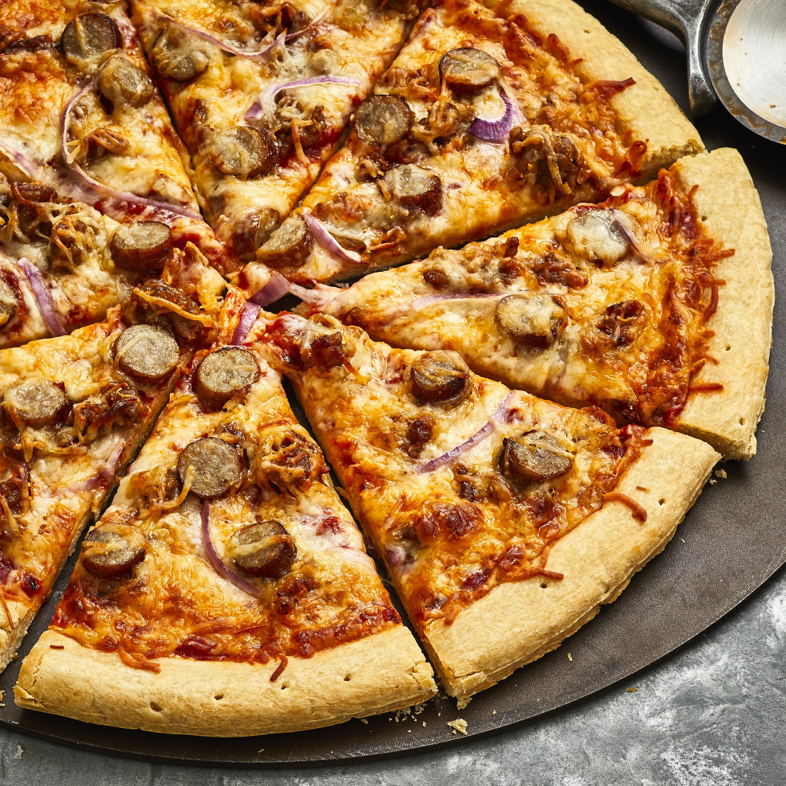

Breakfast Sausage White Cheese Pizza

A simple breakfast pizza that is easy to make and sure to satisfy!
Ingredients:
- 12 ounces ground Italian sausage
- 1 tablespoon butter
- 1 cup chopped onion
- 1 (12 inch) prepared pizza crust
- 1 ¼ cups pizza sauce
- 12 ounces shredded mozzarella cheese
- 8 ounces pork sausage links, sliced
- 12 ounces shredded Monterey Jack cheese
Recipe:
- Preheat oven to 350 degrees F (175 degrees C).
- Place sausage in a large, deep skillet. Cook over medium-high heat until evenly brown. Drain, crumble and set aside.
- Over medium-low heat melt butter in a large saucepan. Add onions. Cook slowly, stirring occasionally, until onions are soft.
- Place crust on pizza pan. Spread pizza sauce over crust and add Italian sausage.
- Cover with mozzarella cheese and place sliced links over cheese.
- Spread Monterey Jack cheese on top of links.
- Bake in preheated oven for 20 to 25 minutes, until golden.